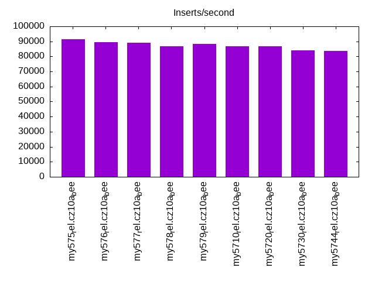
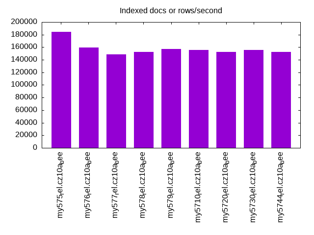
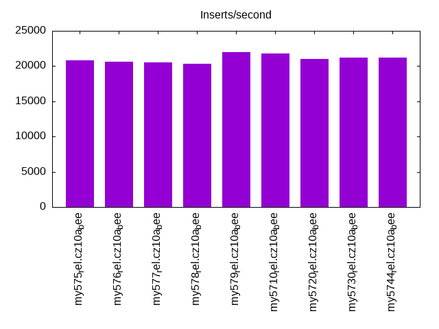
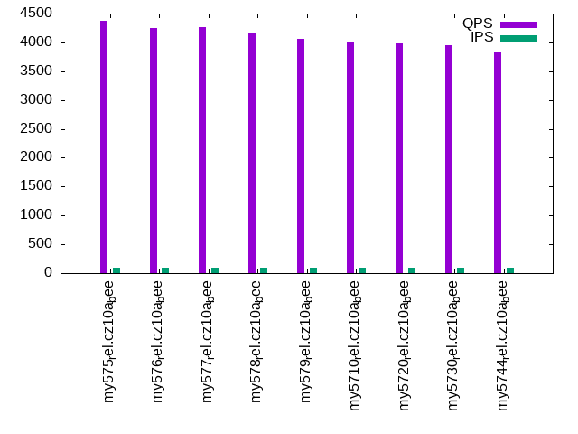
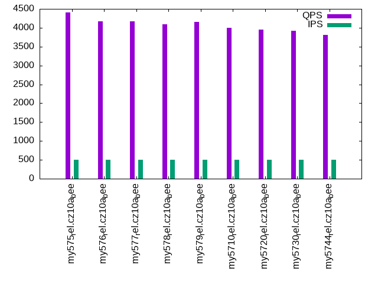
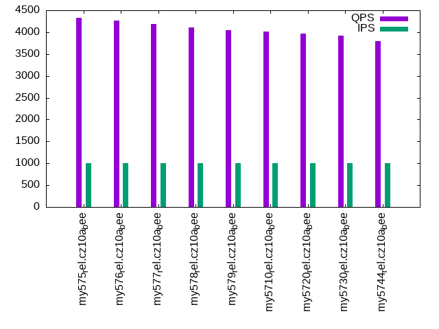

This is a report for the insert benchmark with 20M docs and 1 client(s). It is generated by scripts (bash, awk, sed) and Tufte might not be impressed. An overview of the insert benchmark is here and a short update is here. Below, by DBMS, I mean DBMS+version.config. An example is my8020.c10b40 where my means MySQL, 8020 is version 8.0.20 and c10b40 is the name for the configuration file.
The test server has 8 AMD cores, 16G RAM and an NVMe SSD. It is described here as the Beelink. The benchmark was run with 1 client and there were 1 or 3 connections per client (1 for queries or inserts without rate limits, 1+1 for rate limited inserts+deletes). It uses 1 table. It loads 20M rows per table without secondary indexes, creates secondary indexes, then inserts 50M rows per table with a delete per insert to avoid growing the table. It then does 3 read+write tests for 1800s each that do queries as fast as possible with 100, 500 and then 1000 inserts/second/client concurrent with the queries and 1000 deletes/second to avoid growing the table. The database is cached by InnoDB. Clients and the DBMS share one server. The per-database configs are in the per-database subdirectories here.
The tested DBMS are:
The numbers are inserts/s for l.i0 and l.i1, indexed docs (or rows) /s for l.x and queries/s for q*.2. The values are the average rate over the entire test for inserts (IPS) and queries (QPS). The range of values for IPS and QPS is split into 3 parts: bottom 25%, middle 50%, top 25%. Values in the bottom 25% have a red background, values in the top 25% have a green background and values in the middle have no color. A gray background is used for values that can be ignored because the DBMS did not sustain the target insert rate. Red backgrounds are not used when the minimum value is within 80% of the max value.
| dbms | l.i0 | l.x | l.i1 | q100.1 | q500.1 | q1000.1 |
|---|---|---|---|---|---|---|
| my575_rel.cz10a_bee | 91324 | 184404 | 20825 | 4381 | 4399 | 4326 |
| my576_rel.cz10a_bee | 89686 | 159524 | 20585 | 4246 | 4175 | 4265 |
| my577_rel.cz10a_bee | 89286 | 148889 | 20542 | 4268 | 4163 | 4193 |
| my578_rel.cz10a_bee | 86956 | 152273 | 20309 | 4168 | 4098 | 4104 |
| my579_rel.cz10a_bee | 88496 | 157031 | 21939 | 4067 | 4161 | 4050 |
| my5710_rel.cz10a_bee | 86580 | 155814 | 21777 | 4013 | 3992 | 4008 |
| my5720_rel.cz10a_bee | 86580 | 152273 | 21053 | 3985 | 3952 | 3972 |
| my5730_rel.cz10a_bee | 84034 | 155814 | 21195 | 3947 | 3925 | 3916 |
| my5744_rel.cz10a_bee | 83682 | 152273 | 21213 | 3844 | 3814 | 3796 |
This table has relative throughput, throughput for the DBMS relative to the DBMS in the first line, using the absolute throughput from the previous table. Values less than 0.95 have a yellow background. Values greater than 1.05 have a blue background.
| dbms | l.i0 | l.x | l.i1 | q100.1 | q500.1 | q1000.1 |
|---|---|---|---|---|---|---|
| my575_rel.cz10a_bee | 1.00 | 1.00 | 1.00 | 1.00 | 1.00 | 1.00 |
| my576_rel.cz10a_bee | 0.98 | 0.87 | 0.99 | 0.97 | 0.95 | 0.99 |
| my577_rel.cz10a_bee | 0.98 | 0.81 | 0.99 | 0.97 | 0.95 | 0.97 |
| my578_rel.cz10a_bee | 0.95 | 0.83 | 0.98 | 0.95 | 0.93 | 0.95 |
| my579_rel.cz10a_bee | 0.97 | 0.85 | 1.05 | 0.93 | 0.95 | 0.94 |
| my5710_rel.cz10a_bee | 0.95 | 0.84 | 1.05 | 0.92 | 0.91 | 0.93 |
| my5720_rel.cz10a_bee | 0.95 | 0.83 | 1.01 | 0.91 | 0.90 | 0.92 |
| my5730_rel.cz10a_bee | 0.92 | 0.84 | 1.02 | 0.90 | 0.89 | 0.91 |
| my5744_rel.cz10a_bee | 0.92 | 0.83 | 1.02 | 0.88 | 0.87 | 0.88 |
This lists the average rate of inserts/s for the tests that do inserts concurrent with queries. For such tests the query rate is listed in the table above. The read+write tests are setup so that the insert rate should match the target rate every second. Cells that are not at least 95% of the target have a red background to indicate a failure to satisfy the target.
| dbms | q100.1 | q500.1 | q1000.1 |
|---|---|---|---|
| my575_rel.cz10a_bee | 100 | 499 | 997 |
| my576_rel.cz10a_bee | 100 | 499 | 998 |
| my577_rel.cz10a_bee | 100 | 499 | 997 |
| my578_rel.cz10a_bee | 100 | 499 | 999 |
| my579_rel.cz10a_bee | 100 | 499 | 998 |
| my5710_rel.cz10a_bee | 100 | 499 | 997 |
| my5720_rel.cz10a_bee | 100 | 499 | 998 |
| my5730_rel.cz10a_bee | 100 | 499 | 997 |
| my5744_rel.cz10a_bee | 100 | 499 | 998 |
| target | 100 | 500 | 1000 |
l.i0: load without secondary indexes. Graphs for performance per 1-second interval are here.
Average throughput:
Insert response time histogram: each cell has the percentage of responses that take <= the time in the header and max is the max response time in seconds. For the max column values in the top 25% of the range have a red background and in the bottom 25% of the range have a green background. The red background is not used when the min value is within 80% of the max value.
| dbms | 256us | 1ms | 4ms | 16ms | 64ms | 256ms | 1s | 4s | 16s | gt | max |
|---|---|---|---|---|---|---|---|---|---|---|---|
| my575_rel.cz10a_bee | 49.766 | 49.959 | 0.270 | 0.002 | 0.003 | 0.108 | |||||
| my576_rel.cz10a_bee | 34.914 | 64.806 | 0.274 | 0.003 | 0.003 | 0.102 | |||||
| my577_rel.cz10a_bee | 26.210 | 73.497 | 0.286 | 0.003 | 0.003 | 0.106 | |||||
| my578_rel.cz10a_bee | 7.843 | 91.868 | 0.280 | 0.007 | 0.002 | 0.106 | |||||
| my579_rel.cz10a_bee | 26.339 | 73.367 | 0.288 | 0.003 | 0.003 | 0.108 | |||||
| my5710_rel.cz10a_bee | 5.095 | 94.608 | 0.289 | 0.005 | 0.003 | 0.103 | |||||
| my5720_rel.cz10a_bee | 5.135 | 94.569 | 0.290 | 0.003 | 0.003 | 0.104 | |||||
| my5730_rel.cz10a_bee | 2.620 | 97.029 | 0.210 | 0.138 | 0.003 | 0.105 | |||||
| my5744_rel.cz10a_bee | 2.107 | 97.543 | 0.205 | 0.144 | 0.002 | 0.106 |
Performance metrics for the DBMS listed above. Some are normalized by throughput, others are not. Legend for results is here.
ips qps rps rmbps wps wmbps rpq rkbpq wpi wkbpi csps cpups cspq cpupq dbgb1 dbgb2 rss maxop p50 p99 tag 91324 0 0 0.0 198.5 25.2 0.000 0.000 0.002 0.282 9049 21.5 0.099 19 1.3 17.8 2.6 0.108 91808 80711 20m.my575_rel.cz10a_bee 89686 0 0 0.0 204.1 24.8 0.000 0.000 0.002 0.283 8951 21.2 0.100 19 1.3 17.8 2.2 0.102 90306 79516 20m.my576_rel.cz10a_bee 89286 0 0 0.0 202.5 24.6 0.000 0.000 0.002 0.283 8849 21.1 0.099 19 1.3 17.8 2.2 0.106 89776 78013 20m.my577_rel.cz10a_bee 86956 0 0 0.0 201.3 24.1 0.000 0.000 0.002 0.283 8682 21.0 0.100 19 1.3 17.8 2.2 0.106 87336 77317 20m.my578_rel.cz10a_bee 88496 0 0 0.0 206.3 24.6 0.000 0.000 0.002 0.285 8841 21.2 0.100 19 1.3 17.8 2.2 0.108 89406 78144 20m.my579_rel.cz10a_bee 86580 0 0 0.0 199.1 23.9 0.000 0.000 0.002 0.283 8687 21.3 0.100 20 1.3 17.8 2.2 0.103 86999 76098 20m.my5710_rel.cz10a_bee 86580 0 0 0.0 199.5 23.9 0.000 0.000 0.002 0.283 8675 21.0 0.100 19 1.3 17.8 2.2 0.104 86797 76248 20m.my5720_rel.cz10a_bee 84034 0 0 0.0 197.3 23.4 0.000 0.000 0.002 0.285 8521 21.2 0.101 20 1.3 17.8 2.3 0.105 85205 60107 20m.my5730_rel.cz10a_bee 83682 0 0 0.0 193.5 23.2 0.000 0.000 0.002 0.284 8470 21.2 0.101 20 1.3 17.8 2.3 0.106 84478 73519 20m.my5744_rel.cz10a_bee
l.x: create secondary indexes.
Average throughput:
Performance metrics for the DBMS listed above. Some are normalized by throughput, others are not. Legend for results is here.
ips qps rps rmbps wps wmbps rpq rkbpq wpi wkbpi csps cpups cspq cpupq dbgb1 dbgb2 rss maxop p50 p99 tag 184404 0 0 0.0 1381.3 157.2 0.000 0.000 0.007 0.873 7979 12.3 0.043 5 2.9 19.4 3.6 0.012 NA NA 20m.my575_rel.cz10a_bee 159524 0 0 0.0 1321.2 140.1 0.000 0.000 0.008 0.899 8936 12.4 0.056 6 3.0 19.5 3.3 0.013 NA NA 20m.my576_rel.cz10a_bee 148889 0 0 0.0 1326.9 132.8 0.000 0.000 0.009 0.914 8568 12.4 0.058 7 3.0 19.5 3.2 0.014 NA NA 20m.my577_rel.cz10a_bee 152273 0 0 0.0 1471.9 131.4 0.000 0.000 0.010 0.883 8929 12.4 0.059 7 3.0 19.5 3.2 0.013 NA NA 20m.my578_rel.cz10a_bee 157031 0 0 0.0 1490.3 134.0 0.000 0.000 0.009 0.874 8529 12.3 0.054 6 3.0 19.5 3.2 0.013 NA NA 20m.my579_rel.cz10a_bee 155814 0 0 0.0 1492.3 134.0 0.000 0.000 0.010 0.880 8484 12.3 0.054 6 3.0 19.5 3.2 0.013 NA NA 20m.my5710_rel.cz10a_bee 152273 0 0 0.0 1478.0 131.7 0.000 0.000 0.010 0.885 8926 12.3 0.059 6 3.0 19.5 3.2 0.012 NA NA 20m.my5720_rel.cz10a_bee 155814 0 0 0.0 1489.1 133.4 0.000 0.000 0.010 0.877 8388 12.1 0.054 6 3.0 19.5 3.2 0.020 NA NA 20m.my5730_rel.cz10a_bee 152273 0 0 0.0 1480.9 131.3 0.000 0.000 0.010 0.883 8831 12.1 0.058 6 3.0 19.5 3.2 0.019 NA NA 20m.my5744_rel.cz10a_bee
l.i1: continue load after secondary indexes created. Graphs for performance per 1-second interval are here.
Average throughput:
Insert response time histogram: each cell has the percentage of responses that take <= the time in the header and max is the max response time in seconds. For the max column values in the top 25% of the range have a red background and in the bottom 25% of the range have a green background. The red background is not used when the min value is within 80% of the max value.
| dbms | 256us | 1ms | 4ms | 16ms | 64ms | 256ms | 1s | 4s | 16s | gt | max |
|---|---|---|---|---|---|---|---|---|---|---|---|
| my575_rel.cz10a_bee | 97.422 | 2.523 | 0.053 | 0.003 | 0.096 | ||||||
| my576_rel.cz10a_bee | 97.422 | 2.505 | 0.071 | 0.003 | 0.092 | ||||||
| my577_rel.cz10a_bee | 97.439 | 2.496 | 0.062 | 0.003 | 0.089 | ||||||
| my578_rel.cz10a_bee | 97.386 | 2.555 | 0.056 | 0.003 | 0.090 | ||||||
| my579_rel.cz10a_bee | 97.618 | 2.346 | 0.034 | 0.003 | 0.082 | ||||||
| my5710_rel.cz10a_bee | 97.623 | 2.341 | 0.033 | 0.003 | 0.089 | ||||||
| my5720_rel.cz10a_bee | 97.148 | 2.814 | 0.035 | 0.003 | 0.084 | ||||||
| my5730_rel.cz10a_bee | 97.157 | 2.786 | 0.054 | 0.003 | 0.096 | ||||||
| my5744_rel.cz10a_bee | 97.049 | 2.890 | 0.057 | 0.003 | 0.092 |
Delete response time histogram: each cell has the percentage of responses that take <= the time in the header and max is the max response time in seconds. For the max column values in the top 25% of the range have a red background and in the bottom 25% of the range have a green background. The red background is not used when the min value is within 80% of the max value.
| dbms | 256us | 1ms | 4ms | 16ms | 64ms | 256ms | 1s | 4s | 16s | gt | max |
|---|---|---|---|---|---|---|---|---|---|---|---|
| my575_rel.cz10a_bee | 98.266 | 1.714 | 0.017 | 0.003 | 0.095 | ||||||
| my576_rel.cz10a_bee | 98.252 | 1.730 | 0.014 | 0.003 | 0.097 | ||||||
| my577_rel.cz10a_bee | 98.276 | 1.709 | 0.012 | 0.003 | 0.090 | ||||||
| my578_rel.cz10a_bee | 98.254 | 1.728 | 0.014 | 0.003 | 0.085 | ||||||
| my579_rel.cz10a_bee | 98.318 | 1.665 | 0.014 | 0.003 | 0.081 | ||||||
| my5710_rel.cz10a_bee | 98.321 | 1.662 | 0.013 | 0.003 | 0.089 | ||||||
| my5720_rel.cz10a_bee | 97.822 | 2.166 | 0.009 | 0.003 | 0.085 | ||||||
| my5730_rel.cz10a_bee | 97.827 | 2.158 | 0.012 | 0.003 | 0.097 | ||||||
| my5744_rel.cz10a_bee | 97.685 | 2.299 | 0.012 | 0.003 | 0.091 |
Performance metrics for the DBMS listed above. Some are normalized by throughput, others are not. Legend for results is here.
ips qps rps rmbps wps wmbps rpq rkbpq wpi wkbpi csps cpups cspq cpupq dbgb1 dbgb2 rss maxop p50 p99 tag 20825 0 0 0.0 1700.3 74.2 0.000 0.000 0.082 3.647 13819 38.2 0.664 147 4.5 21.0 5.9 0.096 21238 6443 20m.my575_rel.cz10a_bee 20585 0 0 0.0 1737.4 75.0 0.000 0.000 0.084 3.729 13774 38.1 0.669 148 4.5 21.0 5.6 0.092 21027 5746 20m.my576_rel.cz10a_bee 20542 0 0 0.0 1714.8 74.4 0.000 0.000 0.083 3.708 13735 38.0 0.669 148 4.5 21.0 5.6 0.089 20985 5843 20m.my577_rel.cz10a_bee 20309 0 0 0.0 1719.8 74.5 0.000 0.000 0.085 3.758 13780 38.0 0.679 150 4.5 21.0 5.6 0.090 20777 6393 20m.my578_rel.cz10a_bee 21939 0 0 0.0 1798.2 78.5 0.000 0.000 0.082 3.663 14205 38.6 0.647 141 4.5 21.0 5.6 0.082 22373 7792 20m.my579_rel.cz10a_bee 21777 0 0 0.0 1783.7 78.1 0.000 0.000 0.082 3.675 14098 38.5 0.647 141 4.5 21.0 5.6 0.089 22139 7795 20m.my5710_rel.cz10a_bee 21053 0 0 0.0 1784.5 78.6 0.000 0.000 0.085 3.824 13939 38.3 0.662 146 4.4 20.9 5.5 0.084 21624 7641 20m.my5720_rel.cz10a_bee 21195 0 0 0.0 1800.9 79.5 0.000 0.000 0.085 3.840 14109 38.1 0.666 144 4.4 20.9 5.5 0.096 21786 7841 20m.my5730_rel.cz10a_bee 21213 0 0 0.0 1850.3 81.5 0.000 0.000 0.087 3.936 13980 37.7 0.659 142 4.3 20.8 5.4 0.092 21785 8091 20m.my5744_rel.cz10a_bee
q100.1: range queries with 100 insert/s per client. Graphs for performance per 1-second interval are here.
Average throughput:
Query response time histogram: each cell has the percentage of responses that take <= the time in the header and max is the max response time in seconds. For max values in the top 25% of the range have a red background and in the bottom 25% of the range have a green background. The red background is not used when the min value is within 80% of the max value.
| dbms | 256us | 1ms | 4ms | 16ms | 64ms | 256ms | 1s | 4s | 16s | gt | max |
|---|---|---|---|---|---|---|---|---|---|---|---|
| my575_rel.cz10a_bee | 76.576 | 23.424 | nonzero | nonzero | 0.005 | ||||||
| my576_rel.cz10a_bee | 73.823 | 26.177 | nonzero | nonzero | 0.011 | ||||||
| my577_rel.cz10a_bee | 74.299 | 25.700 | 0.001 | 0.003 | |||||||
| my578_rel.cz10a_bee | 72.346 | 27.654 | 0.001 | nonzero | 0.005 | ||||||
| my579_rel.cz10a_bee | 69.142 | 30.858 | nonzero | nonzero | 0.006 | ||||||
| my5710_rel.cz10a_bee | 68.108 | 31.892 | nonzero | nonzero | 0.006 | ||||||
| my5720_rel.cz10a_bee | 68.364 | 31.635 | nonzero | 0.003 | |||||||
| my5730_rel.cz10a_bee | 67.232 | 32.767 | 0.001 | nonzero | 0.004 | ||||||
| my5744_rel.cz10a_bee | 63.768 | 36.231 | nonzero | 0.004 |
Insert response time histogram: each cell has the percentage of responses that take <= the time in the header and max is the max response time in seconds. For max values in the top 25% of the range have a red background and in the bottom 25% of the range have a green background. The red background is not used when the min value is within 80% of the max value.
| dbms | 256us | 1ms | 4ms | 16ms | 64ms | 256ms | 1s | 4s | 16s | gt | max |
|---|---|---|---|---|---|---|---|---|---|---|---|
| my575_rel.cz10a_bee | 99.583 | 0.417 | 0.014 | ||||||||
| my576_rel.cz10a_bee | 99.611 | 0.389 | 0.014 | ||||||||
| my577_rel.cz10a_bee | 99.472 | 0.528 | 0.014 | ||||||||
| my578_rel.cz10a_bee | 99.472 | 0.528 | 0.011 | ||||||||
| my579_rel.cz10a_bee | 99.583 | 0.389 | 0.028 | 0.018 | |||||||
| my5710_rel.cz10a_bee | 99.500 | 0.500 | 0.013 | ||||||||
| my5720_rel.cz10a_bee | 99.694 | 0.306 | 0.012 | ||||||||
| my5730_rel.cz10a_bee | 99.500 | 0.500 | 0.013 | ||||||||
| my5744_rel.cz10a_bee | 99.583 | 0.417 | 0.011 |
Delete response time histogram: each cell has the percentage of responses that take <= the time in the header and max is the max response time in seconds. For max values in the top 25% of the range have a red background and in the bottom 25% of the range have a green background. The red background is not used when the min value is within 80% of the max value.
| dbms | 256us | 1ms | 4ms | 16ms | 64ms | 256ms | 1s | 4s | 16s | gt | max |
|---|---|---|---|---|---|---|---|---|---|---|---|
| my575_rel.cz10a_bee | 99.639 | 0.361 | 0.008 | ||||||||
| my576_rel.cz10a_bee | 99.667 | 0.333 | 0.014 | ||||||||
| my577_rel.cz10a_bee | 99.556 | 0.444 | 0.009 | ||||||||
| my578_rel.cz10a_bee | 99.500 | 0.500 | 0.009 | ||||||||
| my579_rel.cz10a_bee | 99.528 | 0.472 | 0.012 | ||||||||
| my5710_rel.cz10a_bee | 99.528 | 0.472 | 0.009 | ||||||||
| my5720_rel.cz10a_bee | 99.722 | 0.278 | 0.010 | ||||||||
| my5730_rel.cz10a_bee | 99.528 | 0.472 | 0.013 | ||||||||
| my5744_rel.cz10a_bee | 99.694 | 0.306 | 0.011 |
Performance metrics for the DBMS listed above. Some are normalized by throughput, others are not. Legend for results is here.
ips qps rps rmbps wps wmbps rpq rkbpq wpi wkbpi csps cpups cspq cpupq dbgb1 dbgb2 rss maxop p50 p99 tag 100 4381 0 0.0 54.3 1.6 0.000 0.000 0.545 16.686 17078 12.9 3.898 236 4.5 21.0 5.9 0.005 4346 3980 20m.my575_rel.cz10a_bee 100 4246 0 0.0 63.0 1.9 0.000 0.000 0.632 19.444 16570 12.8 3.902 241 4.5 21.0 5.6 0.011 4202 3899 20m.my576_rel.cz10a_bee 100 4268 0 0.0 58.5 1.8 0.000 0.000 0.586 18.013 16630 12.8 3.896 240 4.5 21.0 5.6 0.003 4218 3899 20m.my577_rel.cz10a_bee 100 4168 0 0.0 58.9 1.8 0.000 0.000 0.590 18.121 16252 12.8 3.899 246 4.5 21.0 5.6 0.005 4123 3804 20m.my578_rel.cz10a_bee 100 4067 0 0.0 62.4 1.9 0.000 0.000 0.625 19.178 15892 13.0 3.907 256 4.5 21.0 5.6 0.006 4046 3758 20m.my579_rel.cz10a_bee 100 4013 0 0.0 67.9 2.0 0.000 0.000 0.681 20.967 15727 12.8 3.919 255 4.5 21.0 5.6 0.006 3981 3661 20m.my5710_rel.cz10a_bee 100 3985 0 0.0 62.0 1.9 0.000 0.000 0.622 19.179 15594 12.9 3.913 259 4.4 20.9 5.5 0.003 3947 3630 20m.my5720_rel.cz10a_bee 100 3947 0 0.0 58.9 1.8 0.000 0.000 0.590 18.202 15423 13.1 3.908 266 4.4 20.9 5.5 0.004 3902 3595 20m.my5730_rel.cz10a_bee 100 3844 0 0.0 58.4 1.8 0.000 0.000 0.585 18.030 15032 12.8 3.911 266 4.3 20.8 5.4 0.004 3806 3533 20m.my5744_rel.cz10a_bee
q500.1: range queries with 500 insert/s per client. Graphs for performance per 1-second interval are here.
Average throughput:
Query response time histogram: each cell has the percentage of responses that take <= the time in the header and max is the max response time in seconds. For max values in the top 25% of the range have a red background and in the bottom 25% of the range have a green background. The red background is not used when the min value is within 80% of the max value.
| dbms | 256us | 1ms | 4ms | 16ms | 64ms | 256ms | 1s | 4s | 16s | gt | max |
|---|---|---|---|---|---|---|---|---|---|---|---|
| my575_rel.cz10a_bee | 77.059 | 22.941 | nonzero | nonzero | 0.010 | ||||||
| my576_rel.cz10a_bee | 72.311 | 27.689 | nonzero | nonzero | 0.007 | ||||||
| my577_rel.cz10a_bee | 72.133 | 27.866 | 0.001 | nonzero | 0.012 | ||||||
| my578_rel.cz10a_bee | 70.193 | 29.806 | 0.001 | nonzero | 0.007 | ||||||
| my579_rel.cz10a_bee | 71.818 | 28.181 | nonzero | nonzero | 0.006 | ||||||
| my5710_rel.cz10a_bee | 68.333 | 31.667 | nonzero | nonzero | 0.007 | ||||||
| my5720_rel.cz10a_bee | 67.264 | 32.736 | nonzero | nonzero | 0.005 | ||||||
| my5730_rel.cz10a_bee | 66.840 | 33.160 | nonzero | 0.003 | |||||||
| my5744_rel.cz10a_bee | 62.887 | 37.113 | nonzero | 0.004 |
Insert response time histogram: each cell has the percentage of responses that take <= the time in the header and max is the max response time in seconds. For max values in the top 25% of the range have a red background and in the bottom 25% of the range have a green background. The red background is not used when the min value is within 80% of the max value.
| dbms | 256us | 1ms | 4ms | 16ms | 64ms | 256ms | 1s | 4s | 16s | gt | max |
|---|---|---|---|---|---|---|---|---|---|---|---|
| my575_rel.cz10a_bee | 99.572 | 0.422 | 0.006 | 0.017 | |||||||
| my576_rel.cz10a_bee | 99.489 | 0.511 | 0.015 | ||||||||
| my577_rel.cz10a_bee | 99.572 | 0.428 | 0.015 | ||||||||
| my578_rel.cz10a_bee | 99.539 | 0.461 | 0.015 | ||||||||
| my579_rel.cz10a_bee | 99.522 | 0.478 | 0.015 | ||||||||
| my5710_rel.cz10a_bee | 99.589 | 0.411 | 0.015 | ||||||||
| my5720_rel.cz10a_bee | 99.383 | 0.617 | 0.010 | ||||||||
| my5730_rel.cz10a_bee | 99.489 | 0.511 | 0.014 | ||||||||
| my5744_rel.cz10a_bee | 99.489 | 0.511 | 0.014 |
Delete response time histogram: each cell has the percentage of responses that take <= the time in the header and max is the max response time in seconds. For max values in the top 25% of the range have a red background and in the bottom 25% of the range have a green background. The red background is not used when the min value is within 80% of the max value.
| dbms | 256us | 1ms | 4ms | 16ms | 64ms | 256ms | 1s | 4s | 16s | gt | max |
|---|---|---|---|---|---|---|---|---|---|---|---|
| my575_rel.cz10a_bee | 99.644 | 0.356 | 0.014 | ||||||||
| my576_rel.cz10a_bee | 99.617 | 0.383 | 0.014 | ||||||||
| my577_rel.cz10a_bee | 99.656 | 0.344 | 0.014 | ||||||||
| my578_rel.cz10a_bee | 99.622 | 0.378 | 0.014 | ||||||||
| my579_rel.cz10a_bee | 99.672 | 0.328 | 0.013 | ||||||||
| my5710_rel.cz10a_bee | 99.678 | 0.322 | 0.013 | ||||||||
| my5720_rel.cz10a_bee | 99.639 | 0.361 | 0.011 | ||||||||
| my5730_rel.cz10a_bee | 99.683 | 0.317 | 0.013 | ||||||||
| my5744_rel.cz10a_bee | 99.678 | 0.322 | 0.012 |
Performance metrics for the DBMS listed above. Some are normalized by throughput, others are not. Legend for results is here.
ips qps rps rmbps wps wmbps rpq rkbpq wpi wkbpi csps cpups cspq cpupq dbgb1 dbgb2 rss maxop p50 p99 tag 499 4399 0 0.0 18.5 1.0 0.000 0.000 0.037 1.960 17133 13.7 3.895 249 4.5 21.0 5.9 0.010 4342 3979 20m.my575_rel.cz10a_bee 499 4175 0 0.0 22.4 1.0 0.000 0.000 0.045 2.095 16297 13.8 3.904 264 4.5 21.0 5.6 0.007 4140 3868 20m.my576_rel.cz10a_bee 499 4163 0 0.0 25.6 1.1 0.000 0.000 0.051 2.331 16264 13.8 3.906 265 4.5 21.0 5.6 0.012 4138 3853 20m.my577_rel.cz10a_bee 499 4098 0 0.0 27.6 1.1 0.000 0.000 0.055 2.348 16018 13.8 3.909 269 4.5 21.0 5.6 0.007 4059 3771 20m.my578_rel.cz10a_bee 499 4161 0 0.0 27.8 1.1 0.000 0.000 0.056 2.358 16288 13.9 3.914 267 4.5 21.0 5.6 0.006 4123 3804 20m.my579_rel.cz10a_bee 499 3992 0 0.0 20.3 1.0 0.000 0.000 0.041 2.044 15588 13.8 3.905 277 4.5 21.0 5.6 0.007 3979 3661 20m.my5710_rel.cz10a_bee 499 3952 0 0.0 26.3 1.1 0.000 0.000 0.053 2.287 15468 13.8 3.914 279 4.4 20.9 5.5 0.005 3927 3628 20m.my5720_rel.cz10a_bee 499 3925 0 0.0 26.2 1.1 0.000 0.000 0.052 2.298 15355 13.9 3.912 283 4.4 20.9 5.5 0.003 3900 3567 20m.my5730_rel.cz10a_bee 499 3814 0 0.0 29.1 1.2 0.000 0.000 0.058 2.483 14946 13.7 3.919 287 4.3 20.8 5.4 0.004 3788 3516 20m.my5744_rel.cz10a_bee
q1000.1: range queries with 1000 insert/s per client. Graphs for performance per 1-second interval are here.
Average throughput:
Query response time histogram: each cell has the percentage of responses that take <= the time in the header and max is the max response time in seconds. For max values in the top 25% of the range have a red background and in the bottom 25% of the range have a green background. The red background is not used when the min value is within 80% of the max value.
| dbms | 256us | 1ms | 4ms | 16ms | 64ms | 256ms | 1s | 4s | 16s | gt | max |
|---|---|---|---|---|---|---|---|---|---|---|---|
| my575_rel.cz10a_bee | 75.811 | 24.188 | 0.001 | nonzero | 0.007 | ||||||
| my576_rel.cz10a_bee | 73.931 | 26.067 | 0.001 | nonzero | 0.013 | ||||||
| my577_rel.cz10a_bee | 72.673 | 27.326 | 0.001 | nonzero | 0.009 | ||||||
| my578_rel.cz10a_bee | 70.427 | 29.571 | 0.001 | nonzero | 0.006 | ||||||
| my579_rel.cz10a_bee | 70.814 | 29.185 | 0.001 | nonzero | 0.006 | ||||||
| my5710_rel.cz10a_bee | 68.743 | 31.256 | 0.001 | nonzero | 0.011 | ||||||
| my5720_rel.cz10a_bee | 67.591 | 32.408 | 0.001 | nonzero | 0.005 | ||||||
| my5730_rel.cz10a_bee | 66.339 | 33.660 | 0.001 | nonzero | 0.005 | ||||||
| my5744_rel.cz10a_bee | 62.840 | 37.159 | 0.001 | nonzero | 0.005 |
Insert response time histogram: each cell has the percentage of responses that take <= the time in the header and max is the max response time in seconds. For max values in the top 25% of the range have a red background and in the bottom 25% of the range have a green background. The red background is not used when the min value is within 80% of the max value.
| dbms | 256us | 1ms | 4ms | 16ms | 64ms | 256ms | 1s | 4s | 16s | gt | max |
|---|---|---|---|---|---|---|---|---|---|---|---|
| my575_rel.cz10a_bee | 99.519 | 0.478 | 0.003 | 0.054 | |||||||
| my576_rel.cz10a_bee | 98.953 | 1.044 | 0.003 | 0.041 | |||||||
| my577_rel.cz10a_bee | 99.486 | 0.511 | 0.003 | 0.048 | |||||||
| my578_rel.cz10a_bee | 99.244 | 0.750 | 0.006 | 0.050 | |||||||
| my579_rel.cz10a_bee | 99.531 | 0.464 | 0.006 | 0.049 | |||||||
| my5710_rel.cz10a_bee | 99.675 | 0.319 | 0.006 | 0.049 | |||||||
| my5720_rel.cz10a_bee | 99.442 | 0.556 | 0.003 | 0.052 | |||||||
| my5730_rel.cz10a_bee | 99.511 | 0.486 | 0.003 | 0.048 | |||||||
| my5744_rel.cz10a_bee | 99.467 | 0.531 | 0.003 | 0.047 |
Delete response time histogram: each cell has the percentage of responses that take <= the time in the header and max is the max response time in seconds. For max values in the top 25% of the range have a red background and in the bottom 25% of the range have a green background. The red background is not used when the min value is within 80% of the max value.
| dbms | 256us | 1ms | 4ms | 16ms | 64ms | 256ms | 1s | 4s | 16s | gt | max |
|---|---|---|---|---|---|---|---|---|---|---|---|
| my575_rel.cz10a_bee | 99.653 | 0.344 | 0.003 | 0.052 | |||||||
| my576_rel.cz10a_bee | 99.272 | 0.722 | 0.006 | 0.039 | |||||||
| my577_rel.cz10a_bee | 99.703 | 0.294 | 0.003 | 0.050 | |||||||
| my578_rel.cz10a_bee | 99.503 | 0.497 | 0.016 | ||||||||
| my579_rel.cz10a_bee | 99.636 | 0.361 | 0.003 | 0.050 | |||||||
| my5710_rel.cz10a_bee | 99.764 | 0.231 | 0.006 | 0.020 | |||||||
| my5720_rel.cz10a_bee | 99.603 | 0.394 | 0.003 | 0.050 | |||||||
| my5730_rel.cz10a_bee | 99.611 | 0.383 | 0.006 | 0.048 | |||||||
| my5744_rel.cz10a_bee | 99.606 | 0.392 | 0.003 | 0.050 |
Performance metrics for the DBMS listed above. Some are normalized by throughput, others are not. Legend for results is here.
ips qps rps rmbps wps wmbps rpq rkbpq wpi wkbpi csps cpups cspq cpupq dbgb1 dbgb2 rss maxop p50 p99 tag 997 4326 0 0.0 112.1 4.2 0.000 0.000 0.112 4.262 17322 14.9 4.004 276 4.5 21.0 5.9 0.007 4285 3963 20m.my575_rel.cz10a_bee 998 4265 0 0.0 112.9 4.1 0.000 0.000 0.113 4.256 17081 14.9 4.005 279 4.5 21.0 5.6 0.013 4203 3900 20m.my576_rel.cz10a_bee 997 4193 0 0.0 110.0 4.1 0.000 0.000 0.110 4.195 16801 14.9 4.007 284 4.5 21.0 5.6 0.009 4155 3852 20m.my577_rel.cz10a_bee 999 4104 0 0.0 114.6 4.2 0.000 0.000 0.115 4.294 16461 14.9 4.011 290 4.5 21.0 5.6 0.006 4075 3741 20m.my578_rel.cz10a_bee 998 4050 0 0.0 109.0 4.1 0.000 0.000 0.109 4.189 16244 15.0 4.011 296 4.5 21.0 5.6 0.006 4027 3706 20m.my579_rel.cz10a_bee 997 4008 0 0.0 113.7 4.2 0.000 0.000 0.114 4.304 16103 14.9 4.017 297 4.5 21.0 5.6 0.011 3993 3675 20m.my5710_rel.cz10a_bee 998 3972 0 0.0 107.3 4.0 0.000 0.000 0.108 4.098 15953 14.9 4.016 300 4.4 20.9 5.5 0.005 3946 3612 20m.my5720_rel.cz10a_bee 997 3916 0 0.0 111.6 4.1 0.000 0.000 0.112 4.225 15758 14.9 4.024 304 4.4 20.9 5.5 0.005 3883 3580 20m.my5730_rel.cz10a_bee 998 3796 0 0.0 112.8 4.2 0.000 0.000 0.113 4.272 15303 14.8 4.031 312 4.3 20.8 5.4 0.005 3772 3499 20m.my5744_rel.cz10a_bee
l.i0: load without secondary indexes
Performance metrics for all DBMS, not just the ones listed above. Some are normalized by throughput, others are not. Legend for results is here.
ips qps rps rmbps wps wmbps rpq rkbpq wpi wkbpi csps cpups cspq cpupq dbgb1 dbgb2 rss maxop p50 p99 tag 91324 0 0 0.0 198.5 25.2 0.000 0.000 0.002 0.282 9049 21.5 0.099 19 1.3 17.8 2.6 0.108 91808 80711 20m.my575_rel.cz10a_bee 89686 0 0 0.0 204.1 24.8 0.000 0.000 0.002 0.283 8951 21.2 0.100 19 1.3 17.8 2.2 0.102 90306 79516 20m.my576_rel.cz10a_bee 89286 0 0 0.0 202.5 24.6 0.000 0.000 0.002 0.283 8849 21.1 0.099 19 1.3 17.8 2.2 0.106 89776 78013 20m.my577_rel.cz10a_bee 86956 0 0 0.0 201.3 24.1 0.000 0.000 0.002 0.283 8682 21.0 0.100 19 1.3 17.8 2.2 0.106 87336 77317 20m.my578_rel.cz10a_bee 88496 0 0 0.0 206.3 24.6 0.000 0.000 0.002 0.285 8841 21.2 0.100 19 1.3 17.8 2.2 0.108 89406 78144 20m.my579_rel.cz10a_bee 86580 0 0 0.0 199.1 23.9 0.000 0.000 0.002 0.283 8687 21.3 0.100 20 1.3 17.8 2.2 0.103 86999 76098 20m.my5710_rel.cz10a_bee 86580 0 0 0.0 199.5 23.9 0.000 0.000 0.002 0.283 8675 21.0 0.100 19 1.3 17.8 2.2 0.104 86797 76248 20m.my5720_rel.cz10a_bee 84034 0 0 0.0 197.3 23.4 0.000 0.000 0.002 0.285 8521 21.2 0.101 20 1.3 17.8 2.3 0.105 85205 60107 20m.my5730_rel.cz10a_bee 83682 0 0 0.0 193.5 23.2 0.000 0.000 0.002 0.284 8470 21.2 0.101 20 1.3 17.8 2.3 0.106 84478 73519 20m.my5744_rel.cz10a_bee
l.x: create secondary indexes
Performance metrics for all DBMS, not just the ones listed above. Some are normalized by throughput, others are not. Legend for results is here.
ips qps rps rmbps wps wmbps rpq rkbpq wpi wkbpi csps cpups cspq cpupq dbgb1 dbgb2 rss maxop p50 p99 tag 184404 0 0 0.0 1381.3 157.2 0.000 0.000 0.007 0.873 7979 12.3 0.043 5 2.9 19.4 3.6 0.012 NA NA 20m.my575_rel.cz10a_bee 159524 0 0 0.0 1321.2 140.1 0.000 0.000 0.008 0.899 8936 12.4 0.056 6 3.0 19.5 3.3 0.013 NA NA 20m.my576_rel.cz10a_bee 148889 0 0 0.0 1326.9 132.8 0.000 0.000 0.009 0.914 8568 12.4 0.058 7 3.0 19.5 3.2 0.014 NA NA 20m.my577_rel.cz10a_bee 152273 0 0 0.0 1471.9 131.4 0.000 0.000 0.010 0.883 8929 12.4 0.059 7 3.0 19.5 3.2 0.013 NA NA 20m.my578_rel.cz10a_bee 157031 0 0 0.0 1490.3 134.0 0.000 0.000 0.009 0.874 8529 12.3 0.054 6 3.0 19.5 3.2 0.013 NA NA 20m.my579_rel.cz10a_bee 155814 0 0 0.0 1492.3 134.0 0.000 0.000 0.010 0.880 8484 12.3 0.054 6 3.0 19.5 3.2 0.013 NA NA 20m.my5710_rel.cz10a_bee 152273 0 0 0.0 1478.0 131.7 0.000 0.000 0.010 0.885 8926 12.3 0.059 6 3.0 19.5 3.2 0.012 NA NA 20m.my5720_rel.cz10a_bee 155814 0 0 0.0 1489.1 133.4 0.000 0.000 0.010 0.877 8388 12.1 0.054 6 3.0 19.5 3.2 0.020 NA NA 20m.my5730_rel.cz10a_bee 152273 0 0 0.0 1480.9 131.3 0.000 0.000 0.010 0.883 8831 12.1 0.058 6 3.0 19.5 3.2 0.019 NA NA 20m.my5744_rel.cz10a_bee
l.i1: continue load after secondary indexes created
Performance metrics for all DBMS, not just the ones listed above. Some are normalized by throughput, others are not. Legend for results is here.
ips qps rps rmbps wps wmbps rpq rkbpq wpi wkbpi csps cpups cspq cpupq dbgb1 dbgb2 rss maxop p50 p99 tag 20825 0 0 0.0 1700.3 74.2 0.000 0.000 0.082 3.647 13819 38.2 0.664 147 4.5 21.0 5.9 0.096 21238 6443 20m.my575_rel.cz10a_bee 20585 0 0 0.0 1737.4 75.0 0.000 0.000 0.084 3.729 13774 38.1 0.669 148 4.5 21.0 5.6 0.092 21027 5746 20m.my576_rel.cz10a_bee 20542 0 0 0.0 1714.8 74.4 0.000 0.000 0.083 3.708 13735 38.0 0.669 148 4.5 21.0 5.6 0.089 20985 5843 20m.my577_rel.cz10a_bee 20309 0 0 0.0 1719.8 74.5 0.000 0.000 0.085 3.758 13780 38.0 0.679 150 4.5 21.0 5.6 0.090 20777 6393 20m.my578_rel.cz10a_bee 21939 0 0 0.0 1798.2 78.5 0.000 0.000 0.082 3.663 14205 38.6 0.647 141 4.5 21.0 5.6 0.082 22373 7792 20m.my579_rel.cz10a_bee 21777 0 0 0.0 1783.7 78.1 0.000 0.000 0.082 3.675 14098 38.5 0.647 141 4.5 21.0 5.6 0.089 22139 7795 20m.my5710_rel.cz10a_bee 21053 0 0 0.0 1784.5 78.6 0.000 0.000 0.085 3.824 13939 38.3 0.662 146 4.4 20.9 5.5 0.084 21624 7641 20m.my5720_rel.cz10a_bee 21195 0 0 0.0 1800.9 79.5 0.000 0.000 0.085 3.840 14109 38.1 0.666 144 4.4 20.9 5.5 0.096 21786 7841 20m.my5730_rel.cz10a_bee 21213 0 0 0.0 1850.3 81.5 0.000 0.000 0.087 3.936 13980 37.7 0.659 142 4.3 20.8 5.4 0.092 21785 8091 20m.my5744_rel.cz10a_bee
q100.1: range queries with 100 insert/s per client
Performance metrics for all DBMS, not just the ones listed above. Some are normalized by throughput, others are not. Legend for results is here.
ips qps rps rmbps wps wmbps rpq rkbpq wpi wkbpi csps cpups cspq cpupq dbgb1 dbgb2 rss maxop p50 p99 tag 100 4381 0 0.0 54.3 1.6 0.000 0.000 0.545 16.686 17078 12.9 3.898 236 4.5 21.0 5.9 0.005 4346 3980 20m.my575_rel.cz10a_bee 100 4246 0 0.0 63.0 1.9 0.000 0.000 0.632 19.444 16570 12.8 3.902 241 4.5 21.0 5.6 0.011 4202 3899 20m.my576_rel.cz10a_bee 100 4268 0 0.0 58.5 1.8 0.000 0.000 0.586 18.013 16630 12.8 3.896 240 4.5 21.0 5.6 0.003 4218 3899 20m.my577_rel.cz10a_bee 100 4168 0 0.0 58.9 1.8 0.000 0.000 0.590 18.121 16252 12.8 3.899 246 4.5 21.0 5.6 0.005 4123 3804 20m.my578_rel.cz10a_bee 100 4067 0 0.0 62.4 1.9 0.000 0.000 0.625 19.178 15892 13.0 3.907 256 4.5 21.0 5.6 0.006 4046 3758 20m.my579_rel.cz10a_bee 100 4013 0 0.0 67.9 2.0 0.000 0.000 0.681 20.967 15727 12.8 3.919 255 4.5 21.0 5.6 0.006 3981 3661 20m.my5710_rel.cz10a_bee 100 3985 0 0.0 62.0 1.9 0.000 0.000 0.622 19.179 15594 12.9 3.913 259 4.4 20.9 5.5 0.003 3947 3630 20m.my5720_rel.cz10a_bee 100 3947 0 0.0 58.9 1.8 0.000 0.000 0.590 18.202 15423 13.1 3.908 266 4.4 20.9 5.5 0.004 3902 3595 20m.my5730_rel.cz10a_bee 100 3844 0 0.0 58.4 1.8 0.000 0.000 0.585 18.030 15032 12.8 3.911 266 4.3 20.8 5.4 0.004 3806 3533 20m.my5744_rel.cz10a_bee
q500.1: range queries with 500 insert/s per client
Performance metrics for all DBMS, not just the ones listed above. Some are normalized by throughput, others are not. Legend for results is here.
ips qps rps rmbps wps wmbps rpq rkbpq wpi wkbpi csps cpups cspq cpupq dbgb1 dbgb2 rss maxop p50 p99 tag 499 4399 0 0.0 18.5 1.0 0.000 0.000 0.037 1.960 17133 13.7 3.895 249 4.5 21.0 5.9 0.010 4342 3979 20m.my575_rel.cz10a_bee 499 4175 0 0.0 22.4 1.0 0.000 0.000 0.045 2.095 16297 13.8 3.904 264 4.5 21.0 5.6 0.007 4140 3868 20m.my576_rel.cz10a_bee 499 4163 0 0.0 25.6 1.1 0.000 0.000 0.051 2.331 16264 13.8 3.906 265 4.5 21.0 5.6 0.012 4138 3853 20m.my577_rel.cz10a_bee 499 4098 0 0.0 27.6 1.1 0.000 0.000 0.055 2.348 16018 13.8 3.909 269 4.5 21.0 5.6 0.007 4059 3771 20m.my578_rel.cz10a_bee 499 4161 0 0.0 27.8 1.1 0.000 0.000 0.056 2.358 16288 13.9 3.914 267 4.5 21.0 5.6 0.006 4123 3804 20m.my579_rel.cz10a_bee 499 3992 0 0.0 20.3 1.0 0.000 0.000 0.041 2.044 15588 13.8 3.905 277 4.5 21.0 5.6 0.007 3979 3661 20m.my5710_rel.cz10a_bee 499 3952 0 0.0 26.3 1.1 0.000 0.000 0.053 2.287 15468 13.8 3.914 279 4.4 20.9 5.5 0.005 3927 3628 20m.my5720_rel.cz10a_bee 499 3925 0 0.0 26.2 1.1 0.000 0.000 0.052 2.298 15355 13.9 3.912 283 4.4 20.9 5.5 0.003 3900 3567 20m.my5730_rel.cz10a_bee 499 3814 0 0.0 29.1 1.2 0.000 0.000 0.058 2.483 14946 13.7 3.919 287 4.3 20.8 5.4 0.004 3788 3516 20m.my5744_rel.cz10a_bee
q1000.1: range queries with 1000 insert/s per client
Performance metrics for all DBMS, not just the ones listed above. Some are normalized by throughput, others are not. Legend for results is here.
ips qps rps rmbps wps wmbps rpq rkbpq wpi wkbpi csps cpups cspq cpupq dbgb1 dbgb2 rss maxop p50 p99 tag 997 4326 0 0.0 112.1 4.2 0.000 0.000 0.112 4.262 17322 14.9 4.004 276 4.5 21.0 5.9 0.007 4285 3963 20m.my575_rel.cz10a_bee 998 4265 0 0.0 112.9 4.1 0.000 0.000 0.113 4.256 17081 14.9 4.005 279 4.5 21.0 5.6 0.013 4203 3900 20m.my576_rel.cz10a_bee 997 4193 0 0.0 110.0 4.1 0.000 0.000 0.110 4.195 16801 14.9 4.007 284 4.5 21.0 5.6 0.009 4155 3852 20m.my577_rel.cz10a_bee 999 4104 0 0.0 114.6 4.2 0.000 0.000 0.115 4.294 16461 14.9 4.011 290 4.5 21.0 5.6 0.006 4075 3741 20m.my578_rel.cz10a_bee 998 4050 0 0.0 109.0 4.1 0.000 0.000 0.109 4.189 16244 15.0 4.011 296 4.5 21.0 5.6 0.006 4027 3706 20m.my579_rel.cz10a_bee 997 4008 0 0.0 113.7 4.2 0.000 0.000 0.114 4.304 16103 14.9 4.017 297 4.5 21.0 5.6 0.011 3993 3675 20m.my5710_rel.cz10a_bee 998 3972 0 0.0 107.3 4.0 0.000 0.000 0.108 4.098 15953 14.9 4.016 300 4.4 20.9 5.5 0.005 3946 3612 20m.my5720_rel.cz10a_bee 997 3916 0 0.0 111.6 4.1 0.000 0.000 0.112 4.225 15758 14.9 4.024 304 4.4 20.9 5.5 0.005 3883 3580 20m.my5730_rel.cz10a_bee 998 3796 0 0.0 112.8 4.2 0.000 0.000 0.113 4.272 15303 14.8 4.031 312 4.3 20.8 5.4 0.005 3772 3499 20m.my5744_rel.cz10a_bee
Insert response time histogram
256us 1ms 4ms 16ms 64ms 256ms 1s 4s 16s gt max tag 0.000 49.766 49.959 0.270 0.002 0.003 0.000 0.000 0.000 0.000 0.108 my575_rel.cz10a_bee 0.000 34.914 64.806 0.274 0.003 0.003 0.000 0.000 0.000 0.000 0.102 my576_rel.cz10a_bee 0.000 26.210 73.497 0.286 0.003 0.003 0.000 0.000 0.000 0.000 0.106 my577_rel.cz10a_bee 0.000 7.843 91.868 0.280 0.007 0.002 0.000 0.000 0.000 0.000 0.106 my578_rel.cz10a_bee 0.000 26.339 73.367 0.288 0.003 0.003 0.000 0.000 0.000 0.000 0.108 my579_rel.cz10a_bee 0.000 5.095 94.608 0.289 0.005 0.003 0.000 0.000 0.000 0.000 0.103 my5710_rel.cz10a_bee 0.000 5.135 94.569 0.290 0.003 0.003 0.000 0.000 0.000 0.000 0.104 my5720_rel.cz10a_bee 0.000 2.620 97.029 0.210 0.138 0.003 0.000 0.000 0.000 0.000 0.105 my5730_rel.cz10a_bee 0.000 2.107 97.543 0.205 0.144 0.002 0.000 0.000 0.000 0.000 0.106 my5744_rel.cz10a_bee
TODO - determine whether there is data for create index response time
Insert response time histogram
256us 1ms 4ms 16ms 64ms 256ms 1s 4s 16s gt max tag 0.000 0.000 97.422 2.523 0.053 0.003 0.000 0.000 0.000 0.000 0.096 my575_rel.cz10a_bee 0.000 0.000 97.422 2.505 0.071 0.003 0.000 0.000 0.000 0.000 0.092 my576_rel.cz10a_bee 0.000 0.000 97.439 2.496 0.062 0.003 0.000 0.000 0.000 0.000 0.089 my577_rel.cz10a_bee 0.000 0.000 97.386 2.555 0.056 0.003 0.000 0.000 0.000 0.000 0.090 my578_rel.cz10a_bee 0.000 0.000 97.618 2.346 0.034 0.003 0.000 0.000 0.000 0.000 0.082 my579_rel.cz10a_bee 0.000 0.000 97.623 2.341 0.033 0.003 0.000 0.000 0.000 0.000 0.089 my5710_rel.cz10a_bee 0.000 0.000 97.148 2.814 0.035 0.003 0.000 0.000 0.000 0.000 0.084 my5720_rel.cz10a_bee 0.000 0.000 97.157 2.786 0.054 0.003 0.000 0.000 0.000 0.000 0.096 my5730_rel.cz10a_bee 0.000 0.000 97.049 2.890 0.057 0.003 0.000 0.000 0.000 0.000 0.092 my5744_rel.cz10a_bee
Delete response time histogram
256us 1ms 4ms 16ms 64ms 256ms 1s 4s 16s gt max tag 0.000 0.000 98.266 1.714 0.017 0.003 0.000 0.000 0.000 0.000 0.095 my575_rel.cz10a_bee 0.000 0.000 98.252 1.730 0.014 0.003 0.000 0.000 0.000 0.000 0.097 my576_rel.cz10a_bee 0.000 0.000 98.276 1.709 0.012 0.003 0.000 0.000 0.000 0.000 0.090 my577_rel.cz10a_bee 0.000 0.000 98.254 1.728 0.014 0.003 0.000 0.000 0.000 0.000 0.085 my578_rel.cz10a_bee 0.000 0.000 98.318 1.665 0.014 0.003 0.000 0.000 0.000 0.000 0.081 my579_rel.cz10a_bee 0.000 0.000 98.321 1.662 0.013 0.003 0.000 0.000 0.000 0.000 0.089 my5710_rel.cz10a_bee 0.000 0.000 97.822 2.166 0.009 0.003 0.000 0.000 0.000 0.000 0.085 my5720_rel.cz10a_bee 0.000 0.000 97.827 2.158 0.012 0.003 0.000 0.000 0.000 0.000 0.097 my5730_rel.cz10a_bee 0.000 0.000 97.685 2.299 0.012 0.003 0.000 0.000 0.000 0.000 0.091 my5744_rel.cz10a_bee
Query response time histogram
256us 1ms 4ms 16ms 64ms 256ms 1s 4s 16s gt max tag 76.576 23.424 nonzero nonzero 0.000 0.000 0.000 0.000 0.000 0.000 0.005 my575_rel.cz10a_bee 73.823 26.177 nonzero nonzero 0.000 0.000 0.000 0.000 0.000 0.000 0.011 my576_rel.cz10a_bee 74.299 25.700 0.001 0.000 0.000 0.000 0.000 0.000 0.000 0.000 0.003 my577_rel.cz10a_bee 72.346 27.654 0.001 nonzero 0.000 0.000 0.000 0.000 0.000 0.000 0.005 my578_rel.cz10a_bee 69.142 30.858 nonzero nonzero 0.000 0.000 0.000 0.000 0.000 0.000 0.006 my579_rel.cz10a_bee 68.108 31.892 nonzero nonzero 0.000 0.000 0.000 0.000 0.000 0.000 0.006 my5710_rel.cz10a_bee 68.364 31.635 nonzero 0.000 0.000 0.000 0.000 0.000 0.000 0.000 0.003 my5720_rel.cz10a_bee 67.232 32.767 0.001 nonzero 0.000 0.000 0.000 0.000 0.000 0.000 0.004 my5730_rel.cz10a_bee 63.768 36.231 nonzero 0.000 0.000 0.000 0.000 0.000 0.000 0.000 0.004 my5744_rel.cz10a_bee
Insert response time histogram
256us 1ms 4ms 16ms 64ms 256ms 1s 4s 16s gt max tag 0.000 0.000 99.583 0.417 0.000 0.000 0.000 0.000 0.000 0.000 0.014 my575_rel.cz10a_bee 0.000 0.000 99.611 0.389 0.000 0.000 0.000 0.000 0.000 0.000 0.014 my576_rel.cz10a_bee 0.000 0.000 99.472 0.528 0.000 0.000 0.000 0.000 0.000 0.000 0.014 my577_rel.cz10a_bee 0.000 0.000 99.472 0.528 0.000 0.000 0.000 0.000 0.000 0.000 0.011 my578_rel.cz10a_bee 0.000 0.000 99.583 0.389 0.028 0.000 0.000 0.000 0.000 0.000 0.018 my579_rel.cz10a_bee 0.000 0.000 99.500 0.500 0.000 0.000 0.000 0.000 0.000 0.000 0.013 my5710_rel.cz10a_bee 0.000 0.000 99.694 0.306 0.000 0.000 0.000 0.000 0.000 0.000 0.012 my5720_rel.cz10a_bee 0.000 0.000 99.500 0.500 0.000 0.000 0.000 0.000 0.000 0.000 0.013 my5730_rel.cz10a_bee 0.000 0.000 99.583 0.417 0.000 0.000 0.000 0.000 0.000 0.000 0.011 my5744_rel.cz10a_bee
Delete response time histogram
256us 1ms 4ms 16ms 64ms 256ms 1s 4s 16s gt max tag 0.000 0.000 99.639 0.361 0.000 0.000 0.000 0.000 0.000 0.000 0.008 my575_rel.cz10a_bee 0.000 0.000 99.667 0.333 0.000 0.000 0.000 0.000 0.000 0.000 0.014 my576_rel.cz10a_bee 0.000 0.000 99.556 0.444 0.000 0.000 0.000 0.000 0.000 0.000 0.009 my577_rel.cz10a_bee 0.000 0.000 99.500 0.500 0.000 0.000 0.000 0.000 0.000 0.000 0.009 my578_rel.cz10a_bee 0.000 0.000 99.528 0.472 0.000 0.000 0.000 0.000 0.000 0.000 0.012 my579_rel.cz10a_bee 0.000 0.000 99.528 0.472 0.000 0.000 0.000 0.000 0.000 0.000 0.009 my5710_rel.cz10a_bee 0.000 0.000 99.722 0.278 0.000 0.000 0.000 0.000 0.000 0.000 0.010 my5720_rel.cz10a_bee 0.000 0.000 99.528 0.472 0.000 0.000 0.000 0.000 0.000 0.000 0.013 my5730_rel.cz10a_bee 0.000 0.000 99.694 0.306 0.000 0.000 0.000 0.000 0.000 0.000 0.011 my5744_rel.cz10a_bee
Query response time histogram
256us 1ms 4ms 16ms 64ms 256ms 1s 4s 16s gt max tag 77.059 22.941 nonzero nonzero 0.000 0.000 0.000 0.000 0.000 0.000 0.010 my575_rel.cz10a_bee 72.311 27.689 nonzero nonzero 0.000 0.000 0.000 0.000 0.000 0.000 0.007 my576_rel.cz10a_bee 72.133 27.866 0.001 nonzero 0.000 0.000 0.000 0.000 0.000 0.000 0.012 my577_rel.cz10a_bee 70.193 29.806 0.001 nonzero 0.000 0.000 0.000 0.000 0.000 0.000 0.007 my578_rel.cz10a_bee 71.818 28.181 nonzero nonzero 0.000 0.000 0.000 0.000 0.000 0.000 0.006 my579_rel.cz10a_bee 68.333 31.667 nonzero nonzero 0.000 0.000 0.000 0.000 0.000 0.000 0.007 my5710_rel.cz10a_bee 67.264 32.736 nonzero nonzero 0.000 0.000 0.000 0.000 0.000 0.000 0.005 my5720_rel.cz10a_bee 66.840 33.160 nonzero 0.000 0.000 0.000 0.000 0.000 0.000 0.000 0.003 my5730_rel.cz10a_bee 62.887 37.113 nonzero 0.000 0.000 0.000 0.000 0.000 0.000 0.000 0.004 my5744_rel.cz10a_bee
Insert response time histogram
256us 1ms 4ms 16ms 64ms 256ms 1s 4s 16s gt max tag 0.000 0.000 99.572 0.422 0.006 0.000 0.000 0.000 0.000 0.000 0.017 my575_rel.cz10a_bee 0.000 0.000 99.489 0.511 0.000 0.000 0.000 0.000 0.000 0.000 0.015 my576_rel.cz10a_bee 0.000 0.000 99.572 0.428 0.000 0.000 0.000 0.000 0.000 0.000 0.015 my577_rel.cz10a_bee 0.000 0.000 99.539 0.461 0.000 0.000 0.000 0.000 0.000 0.000 0.015 my578_rel.cz10a_bee 0.000 0.000 99.522 0.478 0.000 0.000 0.000 0.000 0.000 0.000 0.015 my579_rel.cz10a_bee 0.000 0.000 99.589 0.411 0.000 0.000 0.000 0.000 0.000 0.000 0.015 my5710_rel.cz10a_bee 0.000 0.000 99.383 0.617 0.000 0.000 0.000 0.000 0.000 0.000 0.010 my5720_rel.cz10a_bee 0.000 0.000 99.489 0.511 0.000 0.000 0.000 0.000 0.000 0.000 0.014 my5730_rel.cz10a_bee 0.000 0.000 99.489 0.511 0.000 0.000 0.000 0.000 0.000 0.000 0.014 my5744_rel.cz10a_bee
Delete response time histogram
256us 1ms 4ms 16ms 64ms 256ms 1s 4s 16s gt max tag 0.000 0.000 99.644 0.356 0.000 0.000 0.000 0.000 0.000 0.000 0.014 my575_rel.cz10a_bee 0.000 0.000 99.617 0.383 0.000 0.000 0.000 0.000 0.000 0.000 0.014 my576_rel.cz10a_bee 0.000 0.000 99.656 0.344 0.000 0.000 0.000 0.000 0.000 0.000 0.014 my577_rel.cz10a_bee 0.000 0.000 99.622 0.378 0.000 0.000 0.000 0.000 0.000 0.000 0.014 my578_rel.cz10a_bee 0.000 0.000 99.672 0.328 0.000 0.000 0.000 0.000 0.000 0.000 0.013 my579_rel.cz10a_bee 0.000 0.000 99.678 0.322 0.000 0.000 0.000 0.000 0.000 0.000 0.013 my5710_rel.cz10a_bee 0.000 0.000 99.639 0.361 0.000 0.000 0.000 0.000 0.000 0.000 0.011 my5720_rel.cz10a_bee 0.000 0.000 99.683 0.317 0.000 0.000 0.000 0.000 0.000 0.000 0.013 my5730_rel.cz10a_bee 0.000 0.000 99.678 0.322 0.000 0.000 0.000 0.000 0.000 0.000 0.012 my5744_rel.cz10a_bee
Query response time histogram
256us 1ms 4ms 16ms 64ms 256ms 1s 4s 16s gt max tag 75.811 24.188 0.001 nonzero 0.000 0.000 0.000 0.000 0.000 0.000 0.007 my575_rel.cz10a_bee 73.931 26.067 0.001 nonzero 0.000 0.000 0.000 0.000 0.000 0.000 0.013 my576_rel.cz10a_bee 72.673 27.326 0.001 nonzero 0.000 0.000 0.000 0.000 0.000 0.000 0.009 my577_rel.cz10a_bee 70.427 29.571 0.001 nonzero 0.000 0.000 0.000 0.000 0.000 0.000 0.006 my578_rel.cz10a_bee 70.814 29.185 0.001 nonzero 0.000 0.000 0.000 0.000 0.000 0.000 0.006 my579_rel.cz10a_bee 68.743 31.256 0.001 nonzero 0.000 0.000 0.000 0.000 0.000 0.000 0.011 my5710_rel.cz10a_bee 67.591 32.408 0.001 nonzero 0.000 0.000 0.000 0.000 0.000 0.000 0.005 my5720_rel.cz10a_bee 66.339 33.660 0.001 nonzero 0.000 0.000 0.000 0.000 0.000 0.000 0.005 my5730_rel.cz10a_bee 62.840 37.159 0.001 nonzero 0.000 0.000 0.000 0.000 0.000 0.000 0.005 my5744_rel.cz10a_bee
Insert response time histogram
256us 1ms 4ms 16ms 64ms 256ms 1s 4s 16s gt max tag 0.000 0.000 99.519 0.478 0.003 0.000 0.000 0.000 0.000 0.000 0.054 my575_rel.cz10a_bee 0.000 0.000 98.953 1.044 0.003 0.000 0.000 0.000 0.000 0.000 0.041 my576_rel.cz10a_bee 0.000 0.000 99.486 0.511 0.003 0.000 0.000 0.000 0.000 0.000 0.048 my577_rel.cz10a_bee 0.000 0.000 99.244 0.750 0.006 0.000 0.000 0.000 0.000 0.000 0.050 my578_rel.cz10a_bee 0.000 0.000 99.531 0.464 0.006 0.000 0.000 0.000 0.000 0.000 0.049 my579_rel.cz10a_bee 0.000 0.000 99.675 0.319 0.006 0.000 0.000 0.000 0.000 0.000 0.049 my5710_rel.cz10a_bee 0.000 0.000 99.442 0.556 0.003 0.000 0.000 0.000 0.000 0.000 0.052 my5720_rel.cz10a_bee 0.000 0.000 99.511 0.486 0.003 0.000 0.000 0.000 0.000 0.000 0.048 my5730_rel.cz10a_bee 0.000 0.000 99.467 0.531 0.003 0.000 0.000 0.000 0.000 0.000 0.047 my5744_rel.cz10a_bee
Delete response time histogram
256us 1ms 4ms 16ms 64ms 256ms 1s 4s 16s gt max tag 0.000 0.000 99.653 0.344 0.003 0.000 0.000 0.000 0.000 0.000 0.052 my575_rel.cz10a_bee 0.000 0.000 99.272 0.722 0.006 0.000 0.000 0.000 0.000 0.000 0.039 my576_rel.cz10a_bee 0.000 0.000 99.703 0.294 0.003 0.000 0.000 0.000 0.000 0.000 0.050 my577_rel.cz10a_bee 0.000 0.000 99.503 0.497 0.000 0.000 0.000 0.000 0.000 0.000 0.016 my578_rel.cz10a_bee 0.000 0.000 99.636 0.361 0.003 0.000 0.000 0.000 0.000 0.000 0.050 my579_rel.cz10a_bee 0.000 0.000 99.764 0.231 0.006 0.000 0.000 0.000 0.000 0.000 0.020 my5710_rel.cz10a_bee 0.000 0.000 99.603 0.394 0.003 0.000 0.000 0.000 0.000 0.000 0.050 my5720_rel.cz10a_bee 0.000 0.000 99.611 0.383 0.006 0.000 0.000 0.000 0.000 0.000 0.048 my5730_rel.cz10a_bee 0.000 0.000 99.606 0.392 0.003 0.000 0.000 0.000 0.000 0.000 0.050 my5744_rel.cz10a_bee